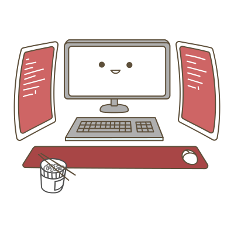

<div id="more-info" class="container-fluid more-info-main">
  <div class="row review-row">
    <div class="col-lg-6 more-info-first-col">
      <div class="more-side-info">
        <div class="col-3 more-side-info-num-1">
          <hr/>
          <span>01</span>
        </div>
        <div class="col-6"><h1>WHO AM I</h1></div>
      </div>
      <div class="more-side-info-bottom">
        
      </div>
    </div>
    <div class="col-lg-4 more-info-description">
      <div class="more-info-description-text">
        <!--<h1>Byron Labuschagne</h1>-->
        <p class="more-para-1">
          Born in Kwa-Zulu Natal, South Africa. I was first introduced to coding
          in 2016 where I learned HTML and CSS and straight after I learned
          Wordpress. My knowledge was further expanded when I join Netwise
          Multi-Media in 2018 and worked solely on CMS sites (mainly Joomla and
          on occasion Wordpress) building custom css design structures with
          bootstrap according to the client's needs. <br/>
          <br/>
          I later worked at Neighbiz as a UI/UX designer and frontend developer.
          My design stack was mainly Flinto (for prototyping) and Sketch (for
          design and wireframing), but later worked with Figma and Adobe XD. I
          was the only designer at the company. On the frontend side I
          collaborated in a team of 5, my role involved building Vue.js
          components where needed.
        </p>
      </div>
      
      <button (click)="toReview()" class="btn btn-danger more-info-btn mt-3">
        Continue
      </button>
    </div>
  </div>
</div>
